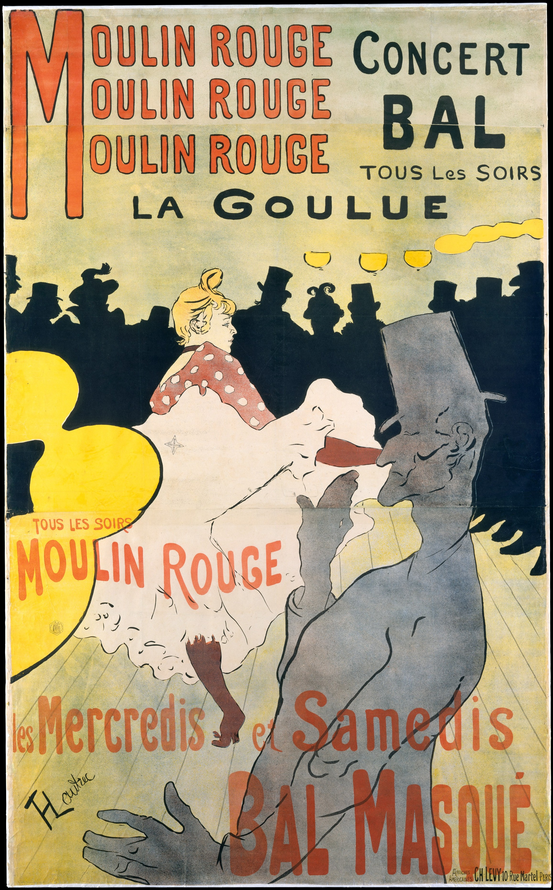

Henri de Toulouse-Lautrec (1890s)
Working in Paris during the Belle Époque, Toulouse-Lautrec transformed lithographic poster design into a modern urban art form.

Henri de Toulouse-Lautrec, Moulin Rouge: La Goulue, 1891
Unlike Mucha’s intricate ornamentation, Lautrec employed flat color planes, bold silhouettes, and asymmetrical compositions. His work reflects the fast-paced nightlife culture of Montmartre.
This stylistic simplification anticipates early modern graphic design. The decorative surface becomes more restrained, and visual impact begins to outweigh ornamental complexity.